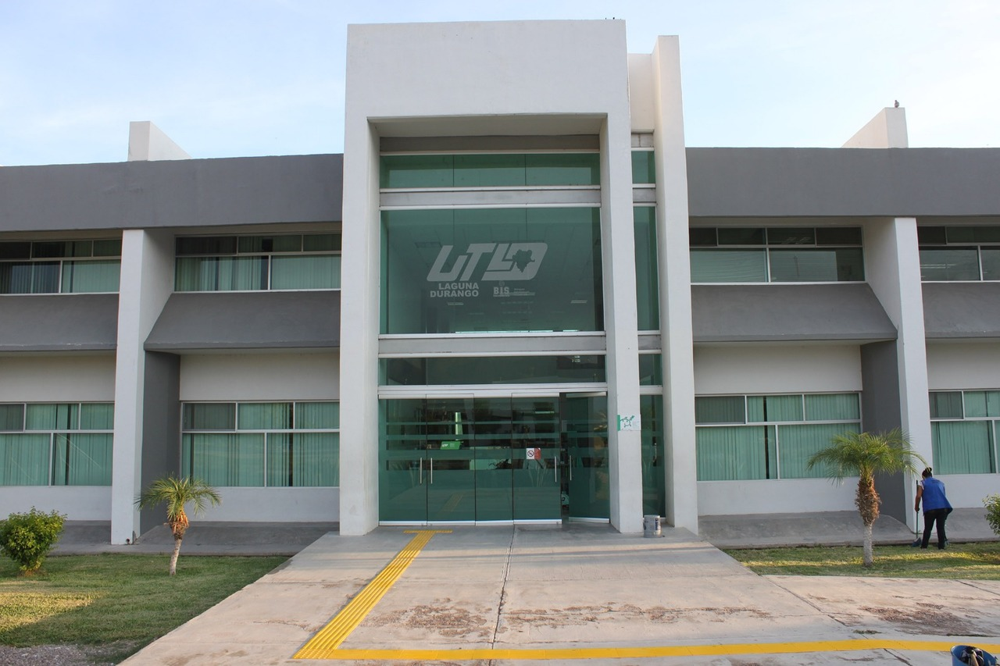

La Universidad Tecnologica de la Laguna Durango (UTLD) |
||
Imagen de la Universidad |
Descripcion |
|
|  | La Universidad Tecnológica de la Laguna Durango (UTLD) es una institución pública de educación superior en Durango, México. Ofrece carreras técnicas y licenciaturas con un enfoque práctico en áreas como Tecnologías de la Información, Mecatrónica, y Procesos Industriales, entre otras. Su modelo educativo se centra en la formación de profesionales capacitados para la industria, a través del aprendizaje práctico. |
|
| Click Para regresar a la primera Pagina | Click Para regresar a la anterior pagina | Click para ir a la siguiente pagina |